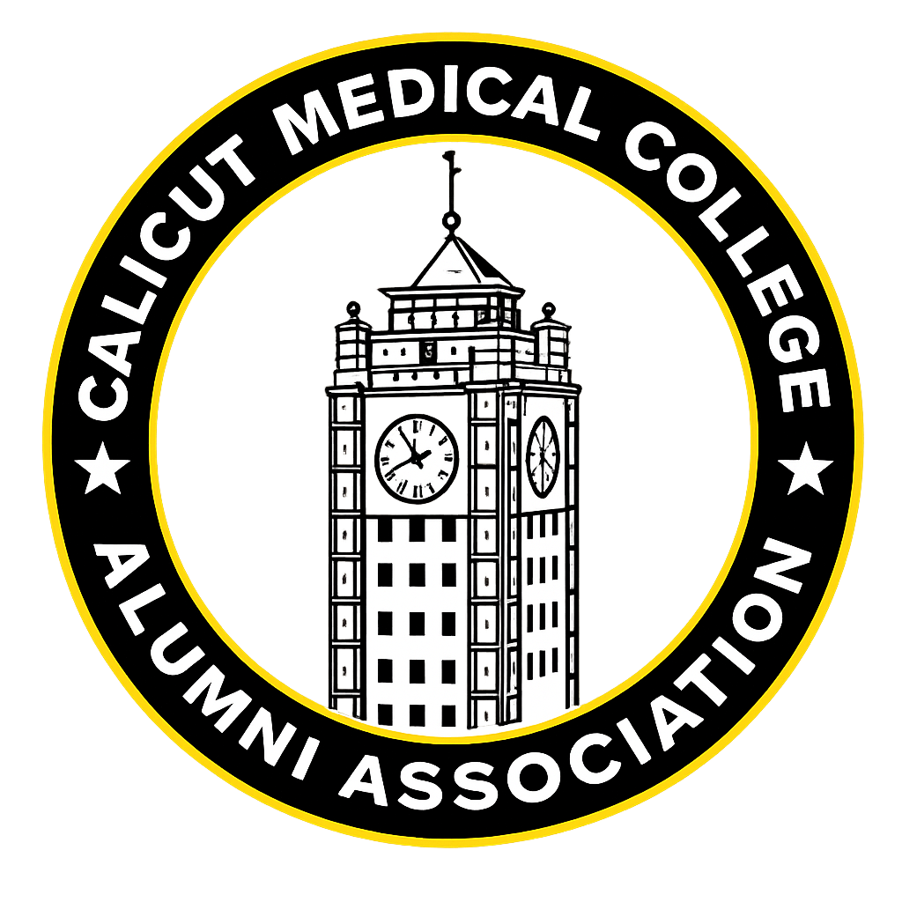
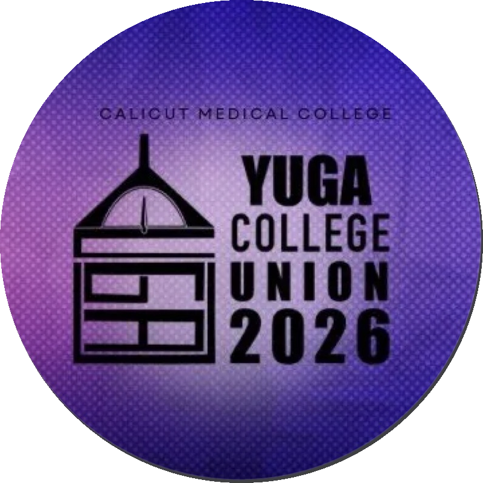

CMC ANALYTICA · LAUNCHCALICUT MEDICAL COLLEGE
LAUNCHED BY THE CMC ALUMNI ASSOCIATION AND THE COLLEGE UNION
CMC Analytica is officially launched.
To bring academic and higher research to the front of our college, and help students understand the dynamics of research.


CHIEF PATRON
Dr. KG Sajeeth Kumar, Principal, GMC Kozhikode
FOUNDING MEMBERS
Dr. Ashraf TP, Vice Principal and President, Alumni Association
Dr. Faizal U., Secretary, Alumni Association; Assistant Professor, Department of Medicine
Dr. Noufira P, Assistant Professor, Department of Pharmacology
Dr. Sidharth Narayanan, House Surgeon
UNION REPRESENTATIVES · YUGA COLLEGE UNION 2026
Nayan Menon, Chairperson
Benjamin Thomas, Vice Chairperson
CMC Analytica · Calicut Medical College · College Union · 2026–2027